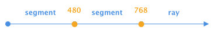
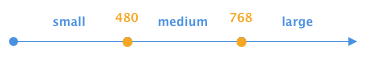
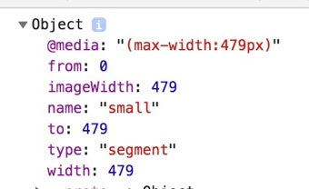
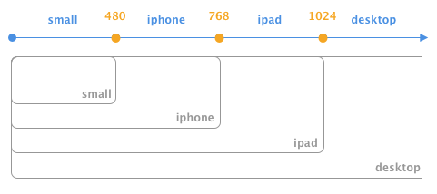
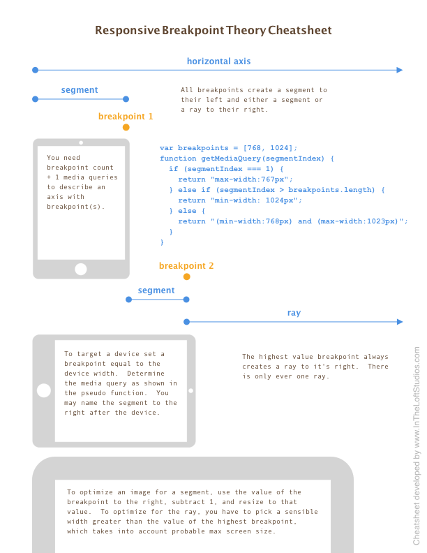

This zero-dependency project provides a means to define points along the horizontal axis of the window, breakpoints, which can fire JS callbacks when the width crosses those breakpoints. It provides a setting, which will apply CSS classes to designated elements. It provides a PHP class with a similar form, that can be useful if you're using, say, a CMS for coordinating breakpoints.
A breakpoint is defined as a single point along the horizontal axis. To the left lies a segment, and to the right of the highest value breakpoint lies the ray. To the right of all but the highest value breakpoint, likes a segment. See the section below Breakpoint Theory.
Visit https://aklump.github.io/breakpointX/ for full documentation.
Install using yarn add @aklump/breakpointx or npm i @aklump/breakpointx
var bp = new BreakpointX([480, 768]);

Get segment info using any point along the axis:
bp.getSegment(200);
bp.getSegment(480);
bp.getSegment(1000);
It can be helpful to name your segments:
var obj = new BreakpointX([480, 768], ['small', 'medium', 'large']);

Then you can also retrieve segment info using a name, which includes items such as the width, from point, to point, media query, image width, name, and more.

bp.getSegment(300);
bp.getSegment('small');
var name = bp.getSegment('small').name;
var query = bp.getSegment('small')['@media'];
var imageWidth = bp.getSegment(300).imageWidth;
To cause CSS classes to be written on an element, pass the appropriate settings, where addClassesTo is a DOM object. It becomes a property of the instance as .el, so it can be accessed in callbacks, if necessary. The example shows adding classes to the html element. If you're using jQuery you could do addClassesTo: $('html').get(0).
// Breakpoints only with settings.
var obj = new BreakpointX([768], ['mobile', 'desktop'], {
addClassesTo: document.documentElement,
classPrefix: 'bpx-',
});
The element will look like this when the browser gets larger and crosses 768px.
<html class="bpx-desktop bpx-bigger">
Or when crossing 768px getting smaller.
<html class="bpx-mobile bpx-smaller">
When the window width changes, and a breakpoint is hit or crossed, callbacks can be registered to fire as a result. this points to the BreakpointX instance.
// When the window crosses any breakpoint in either direction
bp.addCrossAction(function(segment, direction, breakpoint, previousSegment) {
... do something in response.
});
// When the window crosses 768 in either direction
bp.addBreakpointCrossAction(function(segment, direction, breakpoint, previousSegment) {
... do something in response.
});
// When the window crosses 768 getting smaller
bp.addBreakpointCrossSmallerAction(768, function (segment, direction, breakpoint, previousSegment) {
... do something in response.
});
// When the window crosses 768 getting bigger
bp.addBreakpointCrossBiggerAction(768, function (segment, direction, breakpoint, previousSegment) {
... do something in response.
});
Here is an example which demonstrates how you might construct an instance when thinking in terms of physical devices. It's given in PHP, however the JS methods are exactly the same.

<?php
$obj = new BreakpointX();
$obj
->addDevice('iphone', 480)
->addDevice('ipad', 768)
->addDevice('desktop', 1024)
->renameSegment(0, 'small');
You can also generate an object if you have a list of media queries representing the segments and ray. The queries do not need to be in any specific order:
var obj = new BreakpointX();
obj
.addSegmentByMedia('(max-width:768px)') // This is the ray.
.addSegmentByMedia('(min-width:480px) and (max-width:767px)')
.addSegmentByMedia('(max-width:479px)');
While this is foremost a Javascript project, there is a PHP class that may be helpful to your use case. Browser-related methods do not exist, but other methods share the same API as the JS object. The class file is dist/BreakpointX.php or if installing with Node, node_modules/@aklump/breakpointx/dist/BreakpointX.php.
<?php
$bp = new BreakpointX([480, 768]);
$name = $bp->getSegment(300)['name'];
$query = $bp->getSegment(300)['@media'];
$imageWidth = $bp->getSegment(300)['imageWidth'];
For PSR autoloading, the namespace AKlump\\BreakpointX should map to node_modules/@aklump/breakpointx/dist. Here's an example for a composer.json in the same directory as the package.json used to install BreakpointX.
{
"autoload": {
"psr-4": {
"AKlump\\BreakpointX\\": "node_modules/@aklump/breakpointx/dist"
}
}
}
If you find this project useful... please consider making a donation.
This cheatsheet will familiarize you with the terms used in this project.

Download this Cheatsheet by In the Loft Studios